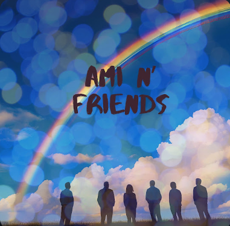

헤비메탈 드러머. 클래식 작곡 전공. 아티잔 터크 심벌즈 공식 엔도서먼트 아티스트. 한 타 한 타, 자신만의 음악을 쌓아 올리고 있습니다.
그녀가 하는 일
메탈로 증명했습니다.
강하게 때리고,
다시 부드럽게 칩니다.
더블 베이스 드럼과 심벌이 있기 전에는, 작은 손의 여섯 살 소녀와 한 대의 피아노, 그리고 긴 오후의 연습이 있었습니다. 세상이 보는 것은 메탈 키트이지만, 그녀가 그 자리에 도달한 길은 클래식 작곡 전공이었습니다.
3분 30초의 솔로 피아노. 화면에는 얼굴이 보이지 않고, 오직 두 손만 보입니다. 왼손은 처음 자리를 떠나지 않습니다. 그것이 중심이자 맥박 — 시간을 놓지 않는 드러머의 손입니다. 오른손은 건반 위를 천천히 오가며 한 음 한 음의 울림을 붙잡습니다. 그녀의 몸은 좌우로 가볍게 흔들립니다. 악보를 읽는 것이 아니라, 머릿속에 들려오는 음악을 따라가는 사람의 움직임입니다. 모든 음이 제자리에 차분히 내려앉습니다.
아미가 고른 네 곡
아미 씨가 직접 고른 네 곡입니다. 조회수가 가장 높은 영상도, 가장 유명한 곡도 아닙니다 — 아미 씨가 여러분께 가장 먼저 보여드리고 싶어 한, 본인이 가장 자부심을 느끼는 연주입니다.


“Don't Cry” 영상에서는 드럼, 리듬 기타, 베이스, 그리고 리드 보컬까지 모두 아미 씨가 직접 연주하고 부릅니다 — 완벽한 영어로. 아미 씨는 드러머일 뿐만 아니라, 그 자체로 하나의 밴드입니다.
발매 작품



Ami n' Friends
패트론 분들과 함께 만든 앨범입니다. 보컬, 피아노, 키보드, 드럼까지 — 모두 아미 씨의 연주와 노래입니다. 직접 작곡하고 프로듀싱한 다섯 곡의 오리지널 트랙이 담겨 있습니다.
- 01 Music보컬 · 피아노 ···
- 02 Sparkle Eyes보컬 쇼케이스 459회 재생
- 03 Journey of Soul피아노 · 보컬 · 드럼 608회 재생
- 04 To a Peaceful World드럼 · 키보드 · 4:00 드럼 솔로 380회 재생
- 05 Hope for the Future보컬 · 키보드 363회 재생